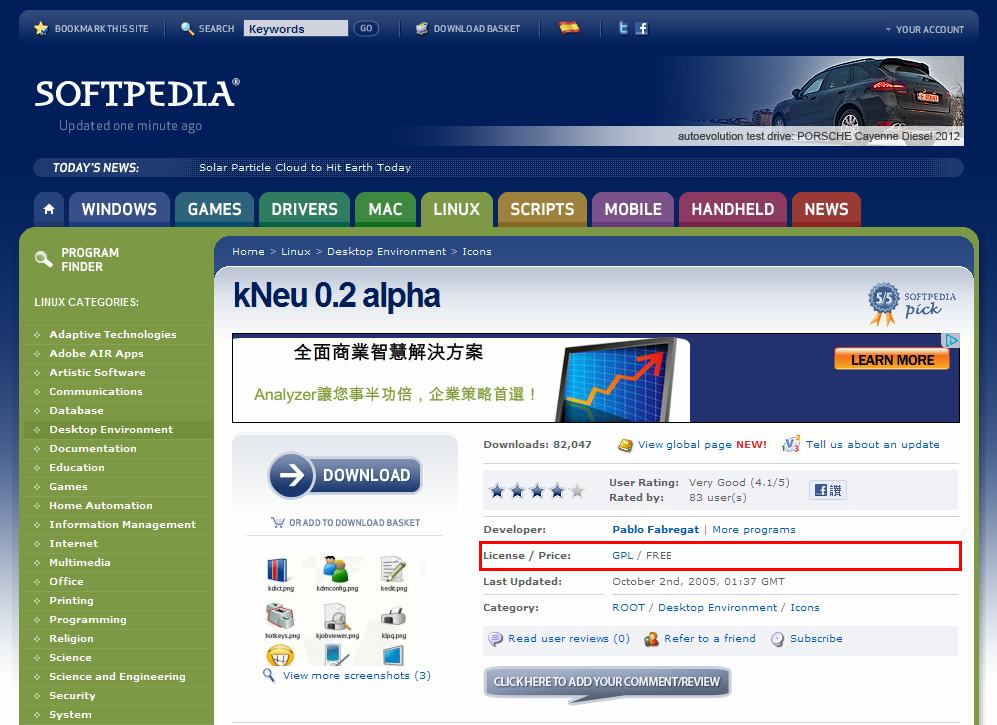
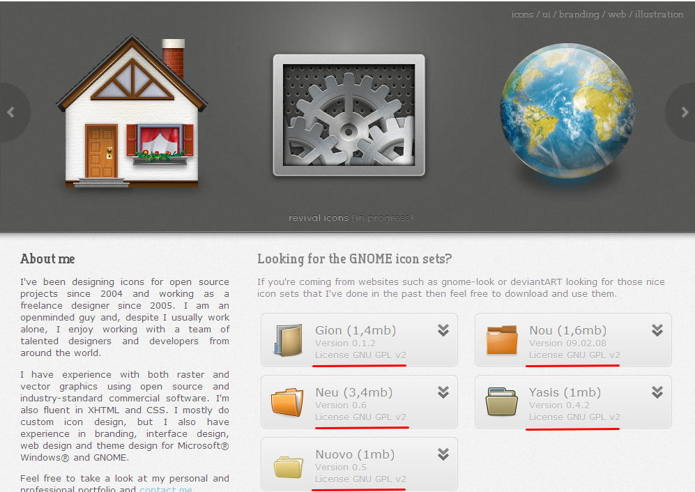

感謝您對「自由軟體鑄造場」的支持與愛護，十多年來「自由軟體鑄造場」受中央研究院支持，並在資訊科學研究所以及資訊科技創新研究中心執行，現已完成階段性的任務。 本網站預計持續維運至 2021年底，網站內容基本上不會再更動。
也紀念我們永遠的朋友 李士傑先生（Shih-Chieh Ilya Li）。
也紀念我們永遠的朋友 李士傑先生（Shih-Chieh Ilya Li）。
Legal Column  GPL 授權的圖示
GPL 授權的圖示
Open Source Software license
 We provide Open Source Software license and legal materials via this page.
We provide Open Source Software license and legal materials via this page.
GPL 授權的圖示
Created at Friday, 20 February 2009 08:00 Last Updated on Monday, 14 May 2012 14:03
GPL 這個授權條款一般來說是適用於「軟體授權」的狀況，但是近年來也看到不少採用 GPL 來授權圖示的例子（註一）。但令人疑惑的是：因為 GPL 授權條款的內容主要是規範軟體授權的運用方式，尤其是要求釋出程式目的碼 (binary code) 的散布者，也必須肩負後續提供程式源碼 (Source Code) 的義務，那麼以 GPL 散布圖示的時候，是不是只要將圖示的圖檔提供出來，便就符合了 GPL 散布者提供源碼的義務？而若是將 GPL 授權的圖示匯入自己開發的專案來使用，會不會因為圖示的部份是 GPL 授權，也導致專案的授權方式也受到影響呢？上述的問題光看 GPL 條款的文義解釋，並無法直接得到明確的答案，因此筆者從探究契約法的法理原則與 GPL 授權的四大自由開始，來尋找這個問題的答案。
首先從契約法的相關論理談起，一般契約法的原理原則是讓契約內容盡量有效，例如民法第 111 條規定：「法律行為之一部分無效者，全部皆為無效。但除去該部分亦可成立者，則其他部分，仍為有效。」並且參酌 GPL-2.0 授權條款第 7 條第 2 項的內容：「If any portion of this section is held invalid or unenforceable under any particular circumstance, the balance of the section is intended to apply and the section as a whole is intended to apply in other circumstances.」可知即使以 GPL 授權條款來釋出圖示並非其預設的對象，然而只要個別條款在應用上仍然可行，那麼這些個別條款便應仍然有效，而可以被合法適用。這就像是以定式的不動產租賃契約來出租停車格一樣，單一停車格的租用、並不會有水電與管理費分擔的權利義務關係，然而定式契約裡面水電費與管理費相關條款的不能適用，並不會造成整份契約都完全無效，締約雙方還是可以就這份契約裡可以適用的範圍來分配彼此的權利義務關係。
所以從上述觀點可以知道，以 GPL 條款釋出圖示的法律行為仍然是有效的，但細節就是、哪一部份的條款內容可以被適用，在適用上又應該如何做調整與解讀呢？
筆者就這個問題有兩層的邏輯推論：第一層推論的想法是依照 GPL 授權條款可適用的規定，以及參酌四大自由的精神，只要該散布者，提供了圖示的編輯圖檔，就已經達到 GPL 提供程式源碼的義務；而第二層推論的想法則是，將 GPL 授權的圖示匯入其他軟體專案中使用，應該可以僅提供該圖示的編輯圖檔即可，軟體專案的其他部份，還是可以使用散布者選擇的其他授權方式，而不會產生授權拘束性方面的問題。
這裡的第一層的推論是直接將 GPL 的義務性要求，以及四大自由的邏輯套用到圖示的狀況裡！GPL 的撰寫目的是為了要實踐四大自由：「使用者有執行程式的自由、研究讓程式適合己身需求的自由、再散布程式的自由，以及改良程式並將改良內容發布出來的自由（註二）。」為了實現這四大自由，GPL 授權專案的程式源碼必須隨同軟體目的碼一同散布，或是取得目的碼之人、也可以嗣後再向散布者索取程式源碼，而程式源碼的範圍、也必須是對應上最適合用來修改該專案軟體的完整版本。所以、一個圖示若是採用 GPL 的授權方式向外散布，圖示本文亦必須要可以被使用、研究、修改、再散布，並且允許他人擷取其中的構思來改良其他的圖示，如此才符合 GPL 的義務性規定，以及四大自由的精神。
所以在圖示的情況下，提供方便編輯的圖示編輯檔，便已經非常貼近 GPL 所代表－便利後手修改的精神，倘若該圖示只有單純的顯示格式，那此顯示格式便為其最高階的編輯格式，而為此種狀況下的圖示源檔，但如果此圖示在顯示格式之外，還有其他更適合被用來修改的編輯檔格式，那就應該要一併散布此編輯檔格式為其圖示源檔。此外、進一步思考，軟體與圖示的自然呈現方式不同，所以兩者修改的難易度也有不同。就軟體的狀況，透過修改目的碼來達到修改軟體的目的具有相當高的難度，因為目的碼並沒有辦法明顯呈現出軟體的撰寫邏輯與架構；但在數位圖示的情況，即使沒有編輯檔、想要修改圖示的人仍然可以直接修改它的顯示圖檔，雖然不像直接修改編輯圖檔一般的容易，但是卻也不會像修改軟體目的碼那樣的困難。因此、在散布 GPL 授權圖示的時候，筆者以為、散布者能夠直接提供編輯圖檔是最好的方式，但若此圖示本來便僅具一般常見的顯示格式，那麼便以這個顯示格式作為該散布行為裡的圖示源檔，這樣也便足夠了。不過當然，所提供任何格式的編輯圖檔都必須是可以被後手修改的，若是在圖示檔案裡添加了數位權利管理 (digital rights management, DRM) 的相關技術，來禁止他人後續修改這個圖示的話，那當然也就不符合 GPL 的授權規定與條款精神了。

▲ 圖1 kNeu 0.2 alpha 圖示下載頁面：https://linux.softpedia.com/get/Desktop-Environment/Icons/kNeu-5497.shtml，採用 GPL-2.0 向外釋出。
而在第二層關於授權拘束性方面的推論上，筆者認為、將 GPL 圖示匯入到軟體專案中來應用，該軟體專案的其他部份，並不必然得要採用 GPL 授權條款來向後散布！這是因為在一般情況下，圖示的可取代性與替換性很高，軟體專案本身並不會因為缺少哪一組圖示而產生功能上的缺陷，多數的狀況、缺少的圖示一樣可以採用另外一組圖示來進行替換，所以筆者基於 GPL-2.0 第 2 條第 2 項對於程式元件「獨立性」的判解（註三），認為在軟體專案裡使用 GPL 授權的圖示，其實並不會讓整個軟體專案也必須同時採用 GPL 的授權方式向後散布，因為這些個別的圖檔、其實在運作上與該專案裡的其他程式元件，具有可區隔及可替換的獨立特性。但若是有人直接修改了 GPL 授權圖示的本體，那麼依照 GPL 的 Copyleft 授權特性，被修改過的圖示便必須要採用 GPL 來進行後續的散布。
而除了 GPL 授權的圖示以外，目前網際網路上還能找到不少採用 LGPL 與 Creative Commons（註四）授權的圖示。Creative Commons 的預設授權內容，本身就適用各類的圖文與影音多媒體創作，所以不會有 GPL 適用到圖示上所產生的解釋問題。而論以 LGPL 授權條款，因為其與 GPL 背後所代表的精神一致，都是奠基於四大自由的理念，因此考究其條款內容與撰寫精神，散布 LGPL 圖示時、併行提供他人可以修改的編輯圖檔，便亦可以滿足 LGPL 相關的義務性要求。那麼利用 LGPL 圖示匯入軟體專案裡，會不會讓該軟體專案也受到 LGPL 授權方式的拘束呢？筆者認為舉重以明輕、LGPL 在連結利用的呼叫關係上，較之 GPL 的授權拘束性向來就是持「更寬鬆 (lesser)」的角度，那麼依照前述 GPL 程式元件獨立性的判解，自然也可以適用於 LGPL 授權圖示的解釋上，也就是說、如果該軟體專案對於 LGPL 授權的圖示，乃是單純圖片顯示上的利用關係，那麼軟體專案的其他部份，並不受到 LGPL 授權方式的拘束，其間的邏輯推論過程，是與利用 GPL 圖示的狀況類同的。

▲ 圖2 各類 GNOME 相關圖示下載頁面：https://www.silvestre.com.ar/?p=6，多數皆採用 GPL-2.0 向外釋出。
還記得最初看到這些採用 GPL/LGPL 授權的圖示，筆者的感受是頗為驚訝。因為這些條款的預設內容都是以程式碼為客體來進行規範，套用到非程式碼性質的其他著作物上，真有些格格不入！推論上之所以會有這種現象產生的原因可能有二：一是這些圖示最初被創作時，就是某些 GPL/LGPL 授權專案的一部份，那麼為了配合軟體專案的授權方式，圖示部份便也一併採用 GPL/LGPL 的授權方式向外散布；二是部份的作者，可能單純希望自己的圖示可以被廣為利用，而 GPL/LGPL 是相當有名的公眾授權條款，因此便就逕行採用這些條款為其圖示的授權方式！而雖然透過解釋，GPL/LGPL 應用到圖示授權上似乎沒有太大的問題，但這畢竟不是最適合圖形著作的授權方式，因此筆者建議是、實務上較適宜的作法，應是就整個軟體專案的內容，兼可以全部宣告以自由開源軟體的授權方式進行散布，但對其中可以簡單被區隔出來另行利用的圖示檔案，則可以同時宣告採用 Creative Commons 的授權方式進行雙重授權，此種作法的好處是、使用者如是就軟體專案本身進行改作時，其衍生程式直接承繼或是參照原專案相關的授權規定即可，但若是使用者需將個別圖示抽離出軟體專案另行應用，則抽離出來的圖示便可以改採 Creative Commons 的授權方式來向後適用，此時 Creative Commons 就圖形著作方面的授權規定，較諸 GPL/LGPL 等自由開源軟體授權條款是更為詳盡，故一方面有助於圖示以圖形創作的地位再被後手改作與散布，另一方面也可以提供該圖示創作權利人更多的權利保障。
註一：筆者這邊提供兩個參考範例：圖示 kNeu：https://linux.softpedia.com/get/Desktop-Environment/Icons/kNeu-5497.shtml，圖示 Yasis：https://www.silvestre.com.ar/?p=6。
註二：關於 GPL 四大自由理念的說明，可參照右列說明頁面，四大自由與自由軟體：https://www.openfoundry.org/index.php?option=com_content&Itemid=14&id=1448&task=view/。
註三：GPL-2.0 第 2 條第 2 項：If identifiable sections of that work are not derived from the Program, and can be reasonably considered independent and separate works in themselves, then this License, and its terms, do not apply to those sections when you distribute them as separate works.
註四：Creative Commons，國內譯名為「創用CC」。中文介紹資訊可以參見《創作分享．快樂使用：簡介創用CC授權》宣傳手冊，下載網址：https://creativecommons.tw/sites/creativecommons.tw/files/static/cchandbook_edu_2008.pdf。
OSSF Newsletter : 第 121 期 GPL 授權的圖示
Tags: DRM, Dual-licensing, 四大自由, 授權選擇, 授權拘束性, Creative Commons, GPL, LGPL,
Category: Legal Column
Open Source Software Foundry‧ Best Viewed with IE7.0 or Firefox2.0 above, 1024x768 Resolution. E-Mail：contact@openfoundry.org
Address：No.128, Sec.2, Academia Rd., Institute of Information Science, Academia Sinica, Nangang District, Taipei City 11529, Taiwan (R.O.C).
Privacy Policy. Terms-of-use
Address：No.128, Sec.2, Academia Rd., Institute of Information Science, Academia Sinica, Nangang District, Taipei City 11529, Taiwan (R.O.C).
Privacy Policy. Terms-of-use